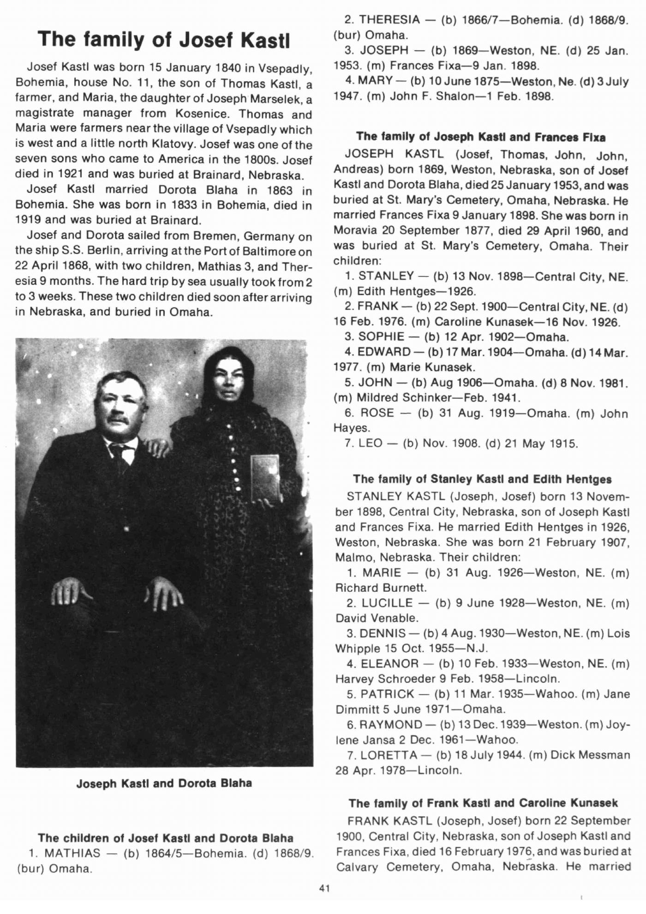
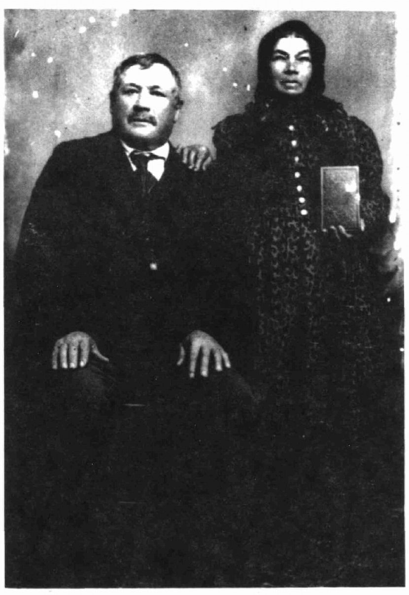

The book · The Family of Joseph Kastl
Page 41 The family of Josef Kastl


Transcription
The family of Josef Kastl
Josef Kastl was born 15 January 1840 in Vsepadly, Bohemia, house No. 11, the son of Thomas Kastl, a farmer, and Maria, the daughter of Joseph Marselek, a magistrate manager from Kosenice. Thomas and Maria were farmers near the village of Vsepadly which is west and a little north Klatovy. Josef was one of the seven sons who came to America in the 1800s. Josef died in 1921 and was buried at Brainard, Nebraska.
Josef Kastl married Dorota Blaha in 1863 in Bohemia. She was born in 1833 in Bohemia, died in 1919 and was buried at Brainard.
Josef and Dorota sailed from Bremen, Germany on the ship S.S. Berlin, arriving at the Port of Baltimore on 22 April 1868, with two children, Mathias 3, and Theresia 9 months. The hard trip by sea usually took from 2 to 3 weeks. These two children died soon after arriving in Nebraska, and buried in Omaha.


The children of Josef Kastl and Dorota Blaha
- MATHIAS — (b) 1864/5—Bohemia. (d) 1868/9. (bur) Omaha.
- THERESIA — (b) 1866/7—Bohemia. (d) 1868/9. (bur) Omaha.
- JOSEPH — (b) 1869—Weston, NE. (d) 25 Jan. 1953. (m) Frances Fixa—9 Jan. 1898.
- MARY — (b) 10 June 1875—Weston, Ne. (d) 3 July 1947. (m) John F. Shalon—1 Feb. 1898.
The family of Joseph Kastl and Frances Fixa
JOSEPH KASTL (Josef, Thomas, John, John, Andreas) born 1869, Weston, Nebraska, son of Josef Kastl and Dorota Blaha, died 25 January 1953, and was buried at St. Mary's Cemetery, Omaha, Nebraska. He married Frances Fixa 9 January 1898. She was born in Moravia 20 September 1877, died 29 April 1960, and was buried at St. Mary's Cemetery, Omaha. Their children:
- STANLEY — (b) 13 Nov. 1898—Central City, NE. (m) Edith Hentges—1926.
- FRANK — (b) 22 Sept. 1900—Central City, NE. (d) 16 Feb. 1976. (m) Caroline Kunasek—16 Nov. 1926.
- SOPHIE — (b) 12 Apr. 1902—Omaha.
- EDWARD — (b) 17 Mar. 1904—Omaha. (d) 14 Mar. 1977. (m) Marie Kunasek.
- JOHN — (b) Aug 1906—Omaha. (d) 8 Nov. 1981. (m) Mildred Schinker—Feb. 1941.
- ROSE — (b) 31 Aug. 1919—Omaha. (m) John Hayes.
- LEO — (b) Nov. 1908. (d) 21 May 1915.
The family of Stanley Kastl and Edith Hentges
STANLEY KASTL (Joseph, Josef) born 13 November 1898, Central City, Nebraska, son of Joseph Kastl and Frances Fixa. He married Edith Hentges in 1926, Weston, Nebraska. She was born 21 February 1907, Malmo, Nebraska. Their children:
- MARIE — (b) 31 Aug. 1926—Weston, NE. (m) Richard Burnett.
- LUCILLE — (b) 9 June 1928—Weston, NE. (m) David Venable.
- DENNIS — (b) 4 Aug. 1930—Weston, NE. (m) Lois Whipple 15 Oct. 1955—N.J.
- ELEANOR — (b) 10 Feb. 1933—Weston, NE. (m) Harvey Schroeder 9 Feb. 1958—Lincoln.
- PATRICK — (b) 11 Mar. 1935—Wahoo. (m) Jane Dimmitt 5 June 1971—Omaha.
- RAYMOND — (b) 13 Dec. 1939—Weston. (m) Joylene Jansa 2 Dec. 1961—Wahoo.
- LORETTA — (b) 18 July 1944. (m) Dick Messman 28 Apr. 1978—Lincoln.
The family of Frank Kastl and Caroline Kunasek
FRANK KASTL (Joseph, Josef) born 22 September 1900, Central City, Nebraska, son of Joseph Kastl and Frances Fixa, died 16 February 1976, and was buried at Calvary Cemetery, Omaha, Nebraska. He married
People from the line of descent on this page
- Thomas Kastl b. 1806
- Maria Marsalek d. 1853
- Josef Marsalek
- Josef Kastl 1840–1921
- Dorota Blaha 1833–1919
- Mathias Kastl 1864/1865–1868/1869
- Theresia Kastl 1866/1867–1868/1869
- Mary Kastl 1875–1947
- Joseph Kastl 1869–1953
- Frances Fixa 1877–1960
- Frank Kastl 1900–1976
- Sophie Kastl b. 1902
- Edward Kastl 1904–1977
- John R. Kastl 1906–1981
- Leo Kastl 1908–1915
- Rose Kastl b. 1919
- Stanley Kastl b. 1898
- Edith Hentges b. 1907
- Marie Kastl b. 1926
- Lucille Kastl b. 1928
- Eleanor Kastl b. 1933
- Patrick Kastl b. 1935
- Raymond Kastl b. 1939
- Loretta Kastl b. 1944
- Dennis Stanley Kastl b. 1930
- Margaret Jane Roller Dymit
Transcriber’s notes
Start of a new chapter (The family of Josef Kastl). Photo caption prints 'Joseph Kastl' although the text calls him Josef. The children list of Josef Kastl and Dorota Blaha begins at the bottom of the left column and continues at the top of the right column. Page ends mid-sentence ('He married') in the Frank Kastl entry, continued on next page.